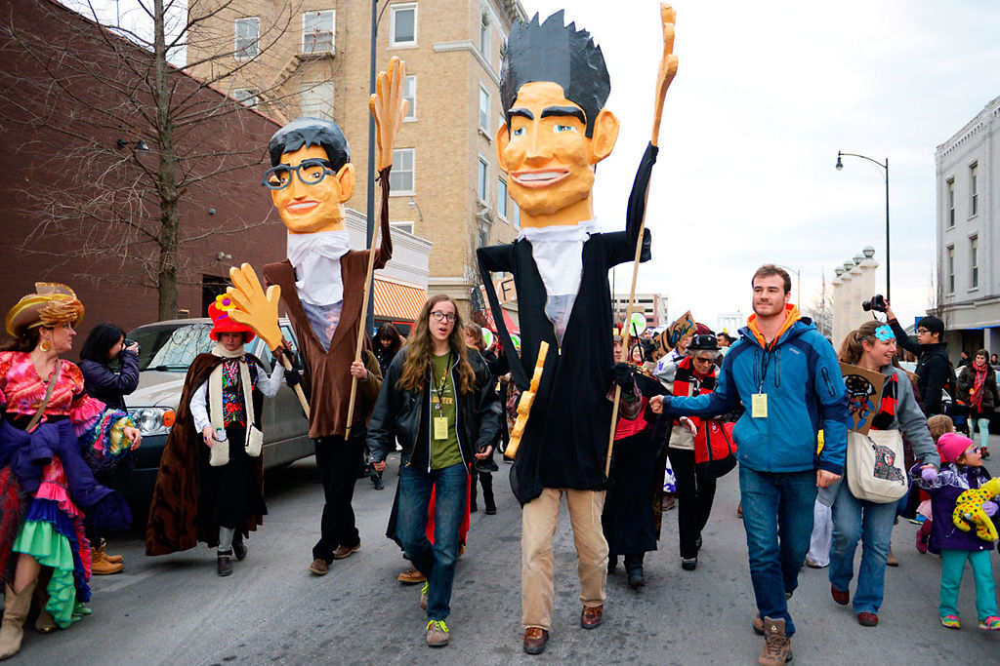

True/False was started by Paul Sturtz and David Wilson (who also founded the Ragtag Cinema) in February 2004. In 2006, it won the Riverfront Times best film festival. In 2008, the film fest lost 1,200 seats due to the renovation work taking place at the Missouri Theatre. To adjust for the loss, the fest expanded beyond its usual boundaries in order to take advantage of additional screens at Macklanburg Cinema, Windsor Cinema, and The Den on the campus of Stephens College. After the completion of its restoration, the historic Missouri Theatre was once again a featured venue for the 2009 edition of the fest. The True/False Film Fest and Stephens College amicably ended their partnership after the 2011 fest, and Stephens College continues to host the annual Citizen Jane Film Festival every fall.
The first True/False Film Festival in 2004 sold 4,200 tickets and the fest has since experienced rapid growth, increasing attendance by 25% or more in all but two years through its first decade. Since then, the festival has increased attendance each year with the exception of 2014, which saw a 3% decrease amid a winter snowstorm. The latest event in 2017 saw another record high in ticket sales, nearly 3,000 more than 2016.
Over the years, the festival has expanded its presentation of other arts, including music and decorative art. The event kicks off with a parade, the "March March," and ends with "Buskers Last Stand," in which many of the invited musicians come together for a closing performance. It encourages additional attendee involvement through participatory events like the "True Life 5K run," and the "Gimme Truth!" game show. The festival has risen from its meager origins to earn recent praise from both the Chicago Tribune and Los Angeles Times
In 2019, the festival received thousands of submissions and sold over 54,000 tickets, bringing thousands of people to mid-Missouri from around the world. The festival is sponsored by almost every downtown store, restaurant and bar, and has multiple other events such as a Camp for both local & national high schools, year-long film programs, and more.